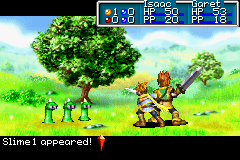

GBA × PSP / visual library
小屏幕，
大画面。
从一张截图开始认识掌机游戏。先看画风，再了解怎么玩、适合谁，以及入坑前要注意什么。

GAMEPLAY IMAGE UNAVAILABLEBrowse by feeling
掌机视觉书架
显示 12 / 12
没有符合条件的游戏。
Archive note
历史目录记录
这是此前记录，不是实时扫描。 曾有一条 GBA 游戏条目登记为“马里奥赛车：超级巡回赛”；PSP 暂无登记。为保护本机信息，页面不公开桌面路径、文件名或文件大小。